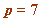
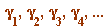
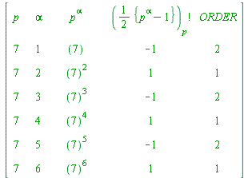

 Here the gamma-values  alternate
| > | M := 2:
p := 7: bound := 6: for alpha to bound do GF||alpha := PI(p^alpha, M, 1): ord||alpha := order(GF||alpha, p^alpha): od: print(``); print(array([ ['p', ``, 'alpha', ``, ``, 'p^alpha', ``, ``, '(({p^alpha-1}/2))[p]!', ORDER], seq([p, ``, alpha, ``, ``, ifactor(p^alpha), ``, ``, GF||alpha, ord||alpha], alpha = 1..bound)])): print(``); lprint(`See how the factorial values alternate -1, 1, -1, 1, ... .`); print(``); lprint(`Of course the order values alternate 2, 1, 2, 1, ... .`); |
|  | |
| `See how the factorial values alternate -1, 1, -1, 1, ... .` | |
| `Of course the order values alternate 2, 1, 2, 1, ... .` |
| > |